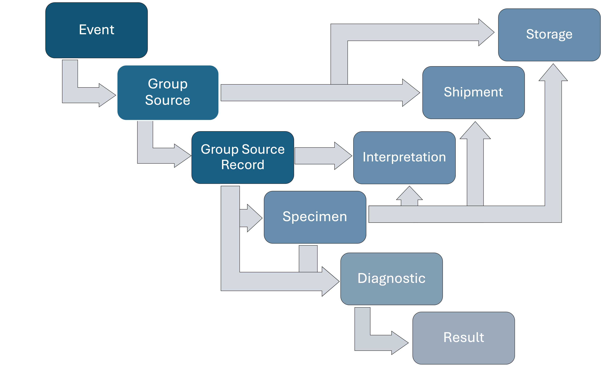
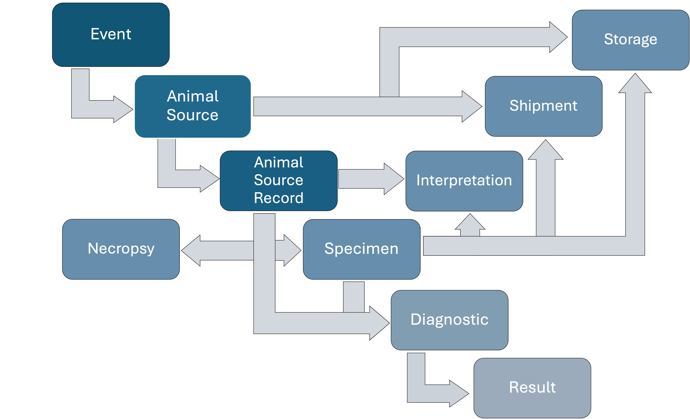
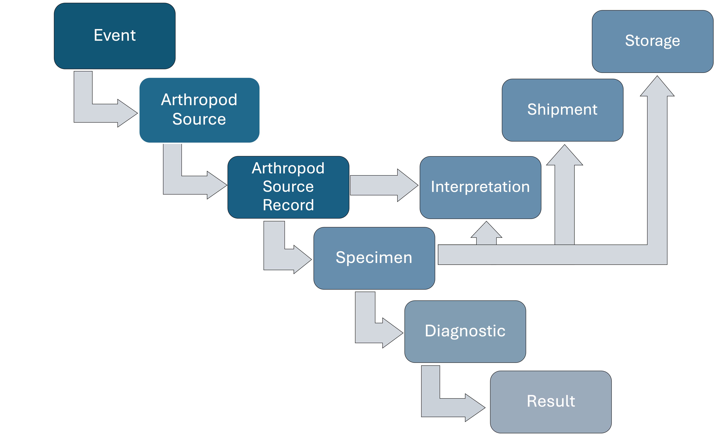
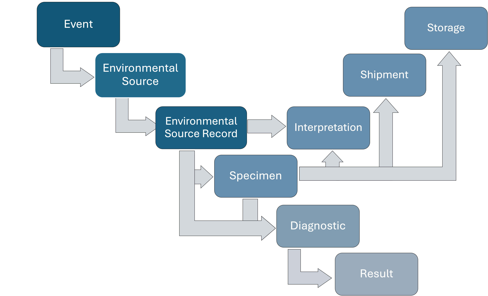

| Topography | NALT_URI | Definition_NALT | Alternative_name |
|---|---|---|---|
| retina | https://lod.nal.usda.gov/nalt/38995 | The ten-layered nervous tissue membrane of the eye. It is continuous with the optic nerve and receives images of external objects and transmits visual impulses to the brain. Its outer surface is in contact with the choroid and the inner surface with the vitreous body. The outer-most layer is pigmented, whereas the inner nine layers are transparent. | NA |
| eye lens | https://lod.nal.usda.gov/nalt/38989 | NA | |
| sclera | https://lod.nal.usda.gov/nalt/290574 | The white, opaque, fibrous, outer tunic of the eyeball, covering it entirely excepting the segment covered anteriorly by the cornea. It is essentially avascular but contains apertures for vessels, lymphatics, and nerves. It receives the tendons of insertion of the extraocular muscles and at the corneoscleral junction contains the canal of Schlemm. | eye white |
| eyes | https://lod.nal.usda.gov/nalt/28392 | eye | |
| lacrimal apparatus | https://lod.nal.usda.gov/nalt/28564 | lacrimal gland | |
| lacrimal apparatus | https://lod.nal.usda.gov/nalt/28564 | conjunctival sac | |
| iris (eyes) | https://lod.nal.usda.gov/nalt/38993 | The most anterior portion of the uveal layer, separating the anterior chamber from the posterior. It consists of two layers - the stroma and the pigmented epithelium. Color of the iris depends on the amount of melanin in the stroma on reflection from the pigmented epithelium. | NA |
| conjunctiva | https://lod.nal.usda.gov/nalt/28561 | NA | |
| cornea | https://lod.nal.usda.gov/nalt/29206 | NA | |
| eyelids | https://lod.nal.usda.gov/nalt/38991 | NA |
General Overview
In the data model, a Source is an epidemiological unit of interest that can be observed, necropsied, diagnosed, or provide Specimens for analysis. The data model manages four types of Sources: i) a group of individuals of the same taxa (Group Source), ii) individual animal (Animal Source), iii) a site providing arthropods (Arthropod Source), and iv) a site providing environmental abiotic specimens (e.g., wastewater) or biotic specimens (e.g., feces not linked to a specific animal) or where metrics such are pH can be measured at (Environmental Source).
Identified Sources can be found at position p and time t in a single or multiple Events.
Group Source
A Group Source is a unit of individuals of the same taxa that belong to a common entity, such as a herd, roost, area, site, farm, cage, stall, or enclosure, forming a single epidemiological unit. Group Sources can be observed, captured, diagnosed, and interpreted as a full unit, and provide collective Specimens if sampling is conducted. A Group Source can be shipped and stored when the individuals are dead.

Figure 9: Detailed relationships of Group Source in the data model.Group Source Record
A Group Source Record documents the animals of a Group Source at time t, categorized by sex, age, and life status (e.g., live or dead).
Key attributes of a Group Source Record include time independent variables:
- Group Source ID
- Record number
- Observed anomalies
- Potential causes of anomalies
- Potential causes of death
Other attributes are provided in the Data Dictionary (under construction)
Several attributes are recorded at the group level and, therefore, multiple options can be included. For example, several observed anomalies may be listed for a Group Source Record, but their distribution across individuals cannot be recorded.
A Group Source Record can be used for a Diagnostic (e.g., assessing the body condition of a specific herd using a standardized metric).
Carcasses of a Group Source Record can be recorded collectively (e.g., multiple dead frogs in a plastic bag) and they can be stored, shipped, and used collectively in a diagnostic test (see “Storage”, “Shipments”, and “Diagnostic” below).
Carcasses of a Group Source Record cannot have a collective necropsy. The individuals animals must be converted to Animal Sources.
The total number of animals of a specific taxon in an Event is the sum of the individuals of the taxa in the Group Source Record and each individual animal of the same taxa recorded as Animal Source Record. For example, consider a herd of 20 cows illegally raised in a protected area whose health is assessed at time t. If two cows are sampled, the two sampled cows should be documented as two separate Animal Source Records (one per cow), while the remaining 18 cows are recorded as a single Group Source Record, categorized by sex, age, and life status. In this scenario, the total number of cows is 20—the 18 recorded in the Group Source Record plus the two documented as Animal Source Records. The “herd” identity of these 20 cows split in three Source Records can be maintained using tags (see Complexities). If, however, the Group Source Record incorrectly includes all 20 cows while two of them are also recorded as Animal Source Record, the total count would incorrectly sum to 22.
Animal Source
An Animal Source represents a single individual. Animal Sources can be observed, captured, tested, necropsied, interpreted, and provide Specimens directly or during a Necropsy. An Animal Source can be shipped and stored if the individual is dead.

Figure 10: Detailed relationships of Animal Source in the data model.Animal Source Record
An Animal Source Record represents an individual Animal Source at time t.
Key attributes of a Animal Source Record include:
- Animal source ID
- Record number
- Species
- Sex
- Age
- Life status
- Observed anomalies
- Potential causes of anomalies or death
Other attributes are provided in the Data Dictionary (under construction)
Some properties of an Animal Source Record allow single or multiple selections. For instance, an animal’s life status is recorded as one category (e.g., “live” or “dead”), whereas multiple anomalies may be reported for the same individual at time t (e.g., wounds, hair loss, diarrhea).
An Animal Source Record can be categorized as dead or live at time t. A live animal at time t can be part of an Event, depending on the Event’s definition.
An Animal Source Record can be used directly for a Diagnostic (e.g., performing X-rays on an animal).
Vaccinations administered to an Animal Source Record can be added ensuring that vaccination history accumulates.
The carcass of an Animal Source Record can be stored, shipped, and used in a diagnostic test (see “Storage”, “Shipments”, and “Diagnostic” below). Live Animal Sources cannot can be shipped or stored.
The carcass of an Animal Source Record can be used in a Necropsy (see “Necropsy” below).
The total number of animals of a specific taxon in an Event is the sum of the individuals of the taxa in the Group Source Record and each individual animal of the same taxa recorded as Animal Source Record. For example, consider a herd of 20 cows illegally raised in a protected area whose health is assessed at time t. If two cows are sampled, the two sampled cows should be documented as two separate Animal Source Records (one per cow), while the remaining 18 cows are recorded as a single Group Source Record, categorized by sex, age, and health status. In this scenario, the total number of cows is 20—the 18 recorded in the Group Source Record plus the two documented as Animal Source Records. The “herd” identity of these 20 cows split in three Source Records can be maintained using a cluster (see Complexities). If, however, the Group Source Record incorrectly includes all 20 cows while two of them are also recorded as Animal Source Record, the total count would incorrectly sum to 22.
Necropsy
A Necropsy is linked to a specific Animal Source Record. A Necropsy can take place in the field or in a facility.
Key attributes of a Necropsy include:
- Necropsy Identifier
- Necropsy Cross Reference Identifier
- Necropsy Date
- Findings per system
Other attributes are provided in the Data Dictionary (under construction)
The Necropsy findings are reported through text in fields such as “Gastrointestinal System”, “Reproductive System”, etc. The list of anatomical components encompassed by each of these elements or systems is provided in the table below and they follow the National Agricultural Library Thesaurus Concept Space (NALT), a controlled vocabulary of terms related to agricultural, biological, physical and social sciences (https://lod.nal.usda.gov/nalt/en/).
Eyes/Eyelids
External Ear/Middle Ear/Inner Ear
| Topography | NALT_URI | Definition_NALT | Alternative_name |
|---|---|---|---|
| inner ear | https://lod.nal.usda.gov/nalt/332326 | The essential part of the hearing organ consists of two labyrinthine compartments: the bony labyrinthine and the membranous labyrinth. The bony labyrinth is a complex of three interconnecting cavities or spaces (Cochlea; vestibular labyrinth; and semicircular canals) in the temporal bone. Within the bony labyrinth lies the membranous labyrinth which is a complex of sacs and tubules (cochlear duct; saccule and utricle; and semicircular ducts) forming a continuous space enclosed by epithelium and connective tissue. These spaces are filled with labyrinthine fluids of various compositions. | labyrinth (inner ear) |
| guttural pouch | https://lod.nal.usda.gov/nalt/35107 | NA | |
| ears | https://lod.nal.usda.gov/nalt/35074 | ear | |
| middle ear | https://lod.nal.usda.gov/nalt/332330 | The space and structures directly internal to the tympanic membrane and external to the inner ear (labyrinth). Its major components include the auditory ossicles and the eustachian tube that connects the cavity of middle ear (tympanic cavity) to the upper part of the throat. | tympanum |
| middle ear | https://lod.nal.usda.gov/nalt/332330 | The space and structures directly internal to the tympanic membrane and external to the inner ear (labyrinth). Its major components include the auditory ossicles and the eustachian tube that connects the cavity of middle ear (tympanic cavity) to the upper part of the throat. | tympanic cavity |
| otoliths | https://lod.nal.usda.gov/nalt/191711 | Structures of the inner ear which function in orientation and equilibrium sensing of vertebrates. Otoliths contain calcium concretions useful for species identification and age determination of fish, and provide information about their life history and ecology. | otoconia |
| otoliths | https://lod.nal.usda.gov/nalt/191711 | Structures of the inner ear which function in orientation and equilibrium sensing of vertebrates. Otoliths contain calcium concretions useful for species identification and age determination of fish, and provide information about their life history and ecology. | otolithic membrane |
| otoliths | https://lod.nal.usda.gov/nalt/191711 | Structures of the inner ear which function in orientation and equilibrium sensing of vertebrates. Otoliths contain calcium concretions useful for species identification and age determination of fish, and provide information about their life history and ecology. | statoconia |
| otoliths | https://lod.nal.usda.gov/nalt/191711 | Structures of the inner ear which function in orientation and equilibrium sensing of vertebrates. Otoliths contain calcium concretions useful for species identification and age determination of fish, and provide information about their life history and ecology. | otolites |
| ear canal | https://lod.nal.usda.gov/nalt/339897 | The narrow passage way that conducts the sound collected by the ear auricle to the tympanic membrane. | auditory canal |
| ear canal | https://lod.nal.usda.gov/nalt/339897 | The narrow passage way that conducts the sound collected by the ear auricle to the tympanic membrane. | meatus acusticus externus |
Nose/Nostrils/Nasal cavity/Vomeronasal organ
| Topography | NALT_URI | Definition_NALT | Alternative_name |
|---|---|---|---|
| nose | https://lod.nal.usda.gov/nalt/54351 | nostrils | |
| vomeronasal organ | https://lod.nal.usda.gov/nalt/308291 | An accessory chemoreceptor organ that is separated from the main olfactory mucosa. It is situated at the base of nasal septum close to the vomer and nasal bones. It forwards chemical signals (such as pheromones) to the central nervous system, thus influencing reproductive and social behavior. In humans, most of its structures except the vomeronasal duct undergo regression after birth. | Jacobson organ |
| vomeronasal organ | https://lod.nal.usda.gov/nalt/308291 | An accessory chemoreceptor organ that is separated from the main olfactory mucosa. It is situated at the base of nasal septum close to the vomer and nasal bones. It forwards chemical signals (such as pheromones) to the central nervous system, thus influencing reproductive and social behavior. In humans, most of its structures except the vomeronasal duct undergo regression after birth. | Jacobson's organ |
| vomeronasal organ | https://lod.nal.usda.gov/nalt/308291 | An accessory chemoreceptor organ that is separated from the main olfactory mucosa. It is situated at the base of nasal septum close to the vomer and nasal bones. It forwards chemical signals (such as pheromones) to the central nervous system, thus influencing reproductive and social behavior. In humans, most of its structures except the vomeronasal duct undergo regression after birth. | vomeronasal nerve |
| nasal mucosa | https://lod.nal.usda.gov/nalt/53591 | NA | |
| nasal cavity | https://lod.nal.usda.gov/nalt/54350 | NA |
Mouth/Beak/Tongue/Teeth/Palate
| Topography | NALT_URI | Definition_NALT | Alternative_name |
|---|---|---|---|
| teeth | https://lod.nal.usda.gov/nalt/32369 | dentine | |
| teeth | https://lod.nal.usda.gov/nalt/32369 | dentition | |
| beak | https://lod.nal.usda.gov/nalt/16134 | NA | |
| gingiva | https://lod.nal.usda.gov/nalt/9531 | Oral tissue surrounding and attached to teeth. | interdental papilla |
| gingiva | https://lod.nal.usda.gov/nalt/9531 | Oral tissue surrounding and attached to teeth. | gums (mouth) |
| lips | https://lod.nal.usda.gov/nalt/50308 | NA | |
| salivary glands | https://lod.nal.usda.gov/nalt/2899 | NA | |
| palate | https://lod.nal.usda.gov/nalt/26789 | roof of the mouth | |
| palate | https://lod.nal.usda.gov/nalt/26789 | hard palate | |
| palate | https://lod.nal.usda.gov/nalt/26789 | soft palate | |
| mouth | https://lod.nal.usda.gov/nalt/33560 | buccal cavity | |
| mouth | https://lod.nal.usda.gov/nalt/33560 | oral cavity | |
| mouth | https://lod.nal.usda.gov/nalt/33560 | periodontium | |
| tongue | https://lod.nal.usda.gov/nalt/53559 | NA |
Skin/Integument/Exoskeleton
| Topography | NALT_URI | Definition_NALT | Alternative_name |
|---|---|---|---|
| Insect cuticle | https://lod.nal.usda.gov/nalt/9104 | NA | NA |
| Perineum | https://lod.nal.usda.gov/nalt/57466 | NA | NA |
| Scar | NA | NA | NA |
| Scent glands | https://lod.nal.usda.gov/nalt/59050 | NA | Poll glands |
| Sebaceous glands | https://lod.nal.usda.gov/nalt/38913 | NA | Tarsal glands |
| Skin (animal) | https://lod.nal.usda.gov/nalt/32499 | NA | NA |
| Sweat glands | https://lod.nal.usda.gov/nalt/38914 | NA | NA |
| Wounds and injuries | https://lod.nal.usda.gov/nalt/728 | NA | NA |
| Antlers | https://lod.nal.usda.gov/nalt/10565 | NA | NA |
| Claws | https://lod.nal.usda.gov/nalt/26735 | NA | Talons |
| Claws | https://lod.nal.usda.gov/nalt/26735 | NA | Nails (non-primates) |
| Claws | https://lod.nal.usda.gov/nalt/26735 | NA | Claw horn |
| Comb (integument) | https://lod.nal.usda.gov/nalt/28099 | NA | NA |
| Eyelashes | NA | NA | NA |
| Feathers | https://lod.nal.usda.gov/nalt/34442 | NA | NA |
| Fur | https://lod.nal.usda.gov/nalt/27376 | NA | Coat (animal) |
| Hairs | https://lod.nal.usda.gov/nalt/44301 | NA | Scalp hair |
| Hairs | https://lod.nal.usda.gov/nalt/44301 | NA | Hairs (animal) |
| Hooves | https://lod.nal.usda.gov/nalt/45820 | NA | Hoofs |
| Integument | https://lod.nal.usda.gov/nalt/9103 | NA | Exuviae |
| Integument | https://lod.nal.usda.gov/nalt/9103 | NA | Body wall |
| Nails (integument) | https://lod.nal.usda.gov/nalt/47469 | NA | Nails (primates) |
| Nails (integument) | https://lod.nal.usda.gov/nalt/47469 | NA | Nails (human) |
| Scales (integument) | https://lod.nal.usda.gov/nalt/47470 | NA | NA |
| Wattles | https://lod.nal.usda.gov/nalt/47472 | NA | NA |
Subcutaneous Fat
| Topography | NALT_URI | Definition_NALT | Alternative_name |
|---|---|---|---|
| subcutaneous fat | https://lod.nal.usda.gov/nalt/18338 | NA |
Musculoskeletal System
| Topography | NALT_URI | Definition_NALT | Alternative_name |
|---|---|---|---|
| joints (animal) | https://lod.nal.usda.gov/nalt/36135 | NA | |
| tendons | https://lod.nal.usda.gov/nalt/28572 | Fibrous bands or cords of connective tissue at the ends of muscle fibers that serve to attach the muscles to bones and other structures. | NA |
| bones | https://lod.nal.usda.gov/nalt/18497 | NA | |
| skeletal muscle | https://lod.nal.usda.gov/nalt/35050 | NA | |
| fascia | https://lod.nal.usda.gov/nalt/28570 | NA | |
| skeleton | https://lod.nal.usda.gov/nalt/53793 | NA |
Thoracic and Abdominal Cavities
| Topography | NALT_URI | Definition_NALT | Alternative_name |
|---|---|---|---|
| mediastinum | https://lod.nal.usda.gov/nalt/51800 | NA | |
| body cavities | https://lod.nal.usda.gov/nalt/1610 | NA | |
| abdominal cavity | https://lod.nal.usda.gov/nalt/1609 | NA | |
| hemocoel | https://lod.nal.usda.gov/nalt/18328 | A body cavity of arthropods and some molluscs that contains blood or hemolymph, which functions as part of the circulatory system by directly bathing the organs. | haemocoel |
| thoracic cavity | https://lod.nal.usda.gov/nalt/18330 | NA |
Cardiovascular System
| Topography | NALT_URI | Definition_NALT | Alternative_name |
|---|---|---|---|
| Heart | https://lod.nal.usda.gov/nalt/9341 | NA | Endocardium |
| Blood plasma | https://lod.nal.usda.gov/nalt/18062 | NA | NA |
| Arteries | https://lod.nal.usda.gov/nalt/10603 | The vessels carrying blood away from the heart. | NA |
| Inferior vena cava | https://lod.nal.usda.gov/nalt/190442 | The venous trunk which receives blood from the lower extremities and from the pelvic and abdominal organs. | NA |
| Blood veins | https://lod.nal.usda.gov/nalt/18176 | NA | NA |
| Blood vessels | https://lod.nal.usda.gov/nalt/12438 | NA | NA |
| Jugular vein | https://lod.nal.usda.gov/nalt/18177 | NA | NA |
| Coronary vessels | https://lod.nal.usda.gov/nalt/12440 | The veins and arteries of the heart. | Coronary arteries |
| Coronary sinus | https://lod.nal.usda.gov/nalt/190439 | A short vein that collects about two thirds of the venous blood from the myocardium and drains into the right atrium. Coronary sinus, normally located between the left atrium and left ventricle on the posterior surface of the heart, can serve as an anatomical reference for cardiac procedures. | NA |
| Hemolymph | https://lod.nal.usda.gov/nalt/26359 | Bloodlike fluid of the hemocoel in open circulatory systems of arthropods and most molluscs. | Haemolymph |
| Portal vein | https://lod.nal.usda.gov/nalt/18178 | NA | NA |
| Blood | https://lod.nal.usda.gov/nalt/18059 | NA | NA |
| Iliac artery | https://lod.nal.usda.gov/nalt/12442 | NA | NA |
| Hepatic artery | https://lod.nal.usda.gov/nalt/12441 | NA | NA |
| Superior vena cava | https://lod.nal.usda.gov/nalt/190443 | The venous trunk which returns blood from the head, neck, upper extremities and chest. | NA |
| Blood serum | https://lod.nal.usda.gov/nalt/18139 | The clear, watery portion of blood that separates out when blood coagulates. It lacks blood clotting factors such as fibrogen and prothrombin. | Serum |
| Carotid arteries | https://lod.nal.usda.gov/nalt/12439 | NA | NA |
| Caudal vein | https://lod.nal.usda.gov/nalt/254549 | NA | Tail vein |
| Myocardium | https://lod.nal.usda.gov/nalt/22397 | The muscle tissue of the heart. It is composed of striated, involuntary muscle cells connected to form the contractile pump to generate blood flow. | Cardiac muscle |
| Aorta | https://lod.nal.usda.gov/nalt/10602 | NA | Aortic root |
| Thymocytes | https://lod.nal.usda.gov/nalt/50929 | NA | NA |
| Fetal bovine serum | https://lod.nal.usda.gov/nalt/191461 | NA | Fetal calf serum |
| Fetal bovine serum | https://lod.nal.usda.gov/nalt/191461 | NA | Fbs (fetal bovine serum) |
| Pulmonary artery | https://lod.nal.usda.gov/nalt/12444 | NA | NA |
| Umbilical arteries | https://lod.nal.usda.gov/nalt/12445 | NA | NA |
| Saphenous vein | https://lod.nal.usda.gov/nalt/18179 | The vein which drains the foot and leg. | NA |
| Ductus arteriosus | https://lod.nal.usda.gov/nalt/28513 | NA | NA |
| Umbilical veins | https://lod.nal.usda.gov/nalt/18180 | NA | NA |
| Heart atrium | https://lod.nal.usda.gov/nalt/13743 | NA | NA |
| Vena cava | https://lod.nal.usda.gov/nalt/18181 | NA | Venae cavae |
| Heart valves | https://lod.nal.usda.gov/nalt/44757 | NA | NA |
| Heart ventricle | https://lod.nal.usda.gov/nalt/44758 | NA | NA |
| Mesenteric arteries | https://lod.nal.usda.gov/nalt/12443 | NA | NA |
Respiratory System
| Topography | NALT_URI | Definition_NALT | Alternative_name |
|---|---|---|---|
| Lungs | https://lod.nal.usda.gov/nalt/9345 | NA | NA |
| Larynx | https://lod.nal.usda.gov/nalt/49283 | NA | NA |
| Spiracles | https://lod.nal.usda.gov/nalt/61125 | NA | NA |
| Bronchi | https://lod.nal.usda.gov/nalt/20020 | The larger air passages of the lungs arising from the terminal bifurcation of the trachea. They include the largest two primary bronchi which branch out into secondary bronchi, and tertiary bronchi which extend into bronchioles and pulmonary alveoli. | Secondary bronchi |
| Bronchi | https://lod.nal.usda.gov/nalt/20020 | The larger air passages of the lungs arising from the terminal bifurcation of the trachea. They include the largest two primary bronchi which branch out into secondary bronchi, and tertiary bronchi which extend into bronchioles and pulmonary alveoli. | Primary bronchi |
| Bronchi | https://lod.nal.usda.gov/nalt/20020 | The larger air passages of the lungs arising from the terminal bifurcation of the trachea. They include the largest two primary bronchi which branch out into secondary bronchi, and tertiary bronchi which extend into bronchioles and pulmonary alveoli. | Bronchus |
| Bronchi | https://lod.nal.usda.gov/nalt/20020 | The larger air passages of the lungs arising from the terminal bifurcation of the trachea. They include the largest two primary bronchi which branch out into secondary bronchi, and tertiary bronchi which extend into bronchioles and pulmonary alveoli. | Tertiary bronchi |
| Air sacs | https://lod.nal.usda.gov/nalt/5852 | NA | NA |
| Vomeronasal organ | https://lod.nal.usda.gov/nalt/308291 | An accessory chemoreceptor organ that is separated from the main olfactory mucosa. It is situated at the base of nasal septum close to the vomer and nasal bones. It forwards chemical signals (such as pheromones) to the central nervous system, thus influencing reproductive and social behavior. In humans, most of its structures except the vomeronasal duct undergo regression after birth. | Jacobson organ |
| Vomeronasal organ | https://lod.nal.usda.gov/nalt/308291 | An accessory chemoreceptor organ that is separated from the main olfactory mucosa. It is situated at the base of nasal septum close to the vomer and nasal bones. It forwards chemical signals (such as pheromones) to the central nervous system, thus influencing reproductive and social behavior. In humans, most of its structures except the vomeronasal duct undergo regression after birth. | Jacobson's organ |
| Vomeronasal organ | https://lod.nal.usda.gov/nalt/308291 | An accessory chemoreceptor organ that is separated from the main olfactory mucosa. It is situated at the base of nasal septum close to the vomer and nasal bones. It forwards chemical signals (such as pheromones) to the central nervous system, thus influencing reproductive and social behavior. In humans, most of its structures except the vomeronasal duct undergo regression after birth. | Vomeronasal nerve |
| Trachea (vertebrates) | https://lod.nal.usda.gov/nalt/61127 | NA | NA |
| Bronchioles | https://lod.nal.usda.gov/nalt/266347 | The small airways branching off the tertiary bronchi. Terminal bronchioles lead into several orders of respiratory bronchioles which in turn lead into alveolar ducts and then into pulmonary alveoli. | NA |
| Respiratory mucosa | https://lod.nal.usda.gov/nalt/202662 | The mucous membrane lining the respiratory tract, including the nasal cavity; the larynx; the trachea; and the bronchi tree. The respiratory mucosa consists of various types of epithelial cells ranging from ciliated columnar to simple squamous, mucous goblet cells, and glands containing both mucous and serous cells. | Respiratory epithelium |
| Gills | https://lod.nal.usda.gov/nalt/9339 | NA | NA |
| Pleura | https://lod.nal.usda.gov/nalt/58808 | NA | NA |
| Tracheae (invertebrates) | https://lod.nal.usda.gov/nalt/61128 | NA | NA |
| Swim bladder | https://lod.nal.usda.gov/nalt/61126 | NA | Swimbladder |
| Swim bladder | https://lod.nal.usda.gov/nalt/61126 | NA | Gas bladder |
| Swim bladder | https://lod.nal.usda.gov/nalt/61126 | NA | Air bladder |
| Topography | NALT_URI | Definition_NALT | Alternative_name |
|---|---|---|---|
| Wounds and injuries | https://lod.nal.usda.gov/nalt/728 | NA | NA |
| Claws | https://lod.nal.usda.gov/nalt/26735 | NA | Talons |
| Claws | https://lod.nal.usda.gov/nalt/26735 | NA | Nails (non-primates) |
| Claws | https://lod.nal.usda.gov/nalt/26735 | NA | Claw horn |
| Skin (animal) | https://lod.nal.usda.gov/nalt/32499 | NA | NA |
| Fur | https://lod.nal.usda.gov/nalt/27376 | NA | Coat (animal) |
| Integument | https://lod.nal.usda.gov/nalt/9103 | NA | Exuviae |
| Integument | https://lod.nal.usda.gov/nalt/9103 | NA | Body wall |
| Hairs | https://lod.nal.usda.gov/nalt/44301 | NA | Scalp hair |
| Hairs | https://lod.nal.usda.gov/nalt/44301 | NA | Hairs (animal) |
| Antlers | https://lod.nal.usda.gov/nalt/10565 | NA | NA |
| Hooves | https://lod.nal.usda.gov/nalt/45820 | NA | Hoofs |
| Sebaceous glands | https://lod.nal.usda.gov/nalt/38913 | NA | Tarsal glands |
| Wattles | https://lod.nal.usda.gov/nalt/47472 | NA | NA |
| Scent glands | https://lod.nal.usda.gov/nalt/59050 | NA | Poll glands |
| Perineum | https://lod.nal.usda.gov/nalt/57466 | NA | NA |
| Sweat glands | https://lod.nal.usda.gov/nalt/38914 | NA | NA |
| Insect cuticle | https://lod.nal.usda.gov/nalt/9104 | NA | NA |
| Scales (integument) | https://lod.nal.usda.gov/nalt/47470 | NA | NA |
| Comb (integument) | https://lod.nal.usda.gov/nalt/28099 | NA | NA |
| Feathers | https://lod.nal.usda.gov/nalt/34442 | NA | NA |
| Nails (integument) | https://lod.nal.usda.gov/nalt/47469 | NA | Nails (primates) |
| Nails (integument) | https://lod.nal.usda.gov/nalt/47469 | NA | Nails (human) |
Esophagus and Gastrointestinal System
| Topography | NALT_URI | Definition_NALT | Alternative_name |
|---|---|---|---|
| Esophagus | https://lod.nal.usda.gov/nalt/33554 | NA | Oesophagus |
| Hepatopancreas | https://lod.nal.usda.gov/nalt/9342 | NA | NA |
| Intestines | https://lod.nal.usda.gov/nalt/42441 | NA | Intestinal tract |
| Nasopharynx | https://lod.nal.usda.gov/nalt/54355 | NA | Rhinopharynx |
| Nasopharynx | https://lod.nal.usda.gov/nalt/54355 | NA | Nasopharynges |
| Gastric mucosa | https://lod.nal.usda.gov/nalt/22390 | Lining of the stomach, consisting of an inner epithelium, a middle lamina propria, and an outer muscularis mucosae. The surface cells produce mucus that protects the stomach from attack by digestive acid and enzymes. When the epithelium invaginates into the lamina propria at various regions of the stomach, different tubular gastric glands are formed. These glands consist of cells that secrete mucus, enzymes, hydrochloric acid, or hormones. | Gastric glands |
| Gastric mucosa | https://lod.nal.usda.gov/nalt/22390 | Lining of the stomach, consisting of an inner epithelium, a middle lamina propria, and an outer muscularis mucosae. The surface cells produce mucus that protects the stomach from attack by digestive acid and enzymes. When the epithelium invaginates into the lamina propria at various regions of the stomach, different tubular gastric glands are formed. These glands consist of cells that secrete mucus, enzymes, hydrochloric acid, or hormones. | Cardiac glands |
| Gastric mucosa | https://lod.nal.usda.gov/nalt/22390 | Lining of the stomach, consisting of an inner epithelium, a middle lamina propria, and an outer muscularis mucosae. The surface cells produce mucus that protects the stomach from attack by digestive acid and enzymes. When the epithelium invaginates into the lamina propria at various regions of the stomach, different tubular gastric glands are formed. These glands consist of cells that secrete mucus, enzymes, hydrochloric acid, or hormones. | Pyloric glands |
| Gastric mucosa | https://lod.nal.usda.gov/nalt/22390 | Lining of the stomach, consisting of an inner epithelium, a middle lamina propria, and an outer muscularis mucosae. The surface cells produce mucus that protects the stomach from attack by digestive acid and enzymes. When the epithelium invaginates into the lamina propria at various regions of the stomach, different tubular gastric glands are formed. These glands consist of cells that secrete mucus, enzymes, hydrochloric acid, or hormones. | Stomach mucosa |
| Cloaca | https://lod.nal.usda.gov/nalt/26934 | NA | NA |
| Large intestine | https://lod.nal.usda.gov/nalt/23273 | NA | NA |
| Esophageal sphincter | https://lod.nal.usda.gov/nalt/38157 | NA | Oesophagogastric junction |
| Esophageal sphincter | https://lod.nal.usda.gov/nalt/38157 | NA | Esophagogastric junction |
| Esophageal sphincter | https://lod.nal.usda.gov/nalt/38157 | NA | Oesophageal sphincter |
| Liver | https://lod.nal.usda.gov/nalt/9344 | NA | Liver (anatomy) |
| Ileum | https://lod.nal.usda.gov/nalt/46899 | NA | NA |
| Colon | https://lod.nal.usda.gov/nalt/27880 | NA | NA |
| Rectum | https://lod.nal.usda.gov/nalt/10589 | NA | NA |
| Stomach | https://lod.nal.usda.gov/nalt/9350 | NA | NA |
| Crop (digestive system) | https://lod.nal.usda.gov/nalt/30108 | NA | Honey sac |
| Small intestine | https://lod.nal.usda.gov/nalt/34888 | NA | NA |
| Rumen | https://lod.nal.usda.gov/nalt/41231 | NA | NA |
| Pancreas | https://lod.nal.usda.gov/nalt/2897 | NA | NA |
| Anus | https://lod.nal.usda.gov/nalt/8441 | NA | Anal sphincter |
| Cecum | https://lod.nal.usda.gov/nalt/20837 | NA | Caecum |
| Gall bladder | https://lod.nal.usda.gov/nalt/9338 | NA | Gallbladder |
| Omasum | https://lod.nal.usda.gov/nalt/41229 | NA | NA |
| Duodenum | https://lod.nal.usda.gov/nalt/34887 | NA | NA |
| Gizzard | https://lod.nal.usda.gov/nalt/33557 | NA | NA |
| Gastric fundus | https://lod.nal.usda.gov/nalt/42409 | NA | Stomach fundus |
| Reticulum | https://lod.nal.usda.gov/nalt/41230 | NA | NA |
| Pharynx | https://lod.nal.usda.gov/nalt/33561 | NA | Pharynges |
| Oropharynx | https://lod.nal.usda.gov/nalt/234524 | The middle portion of the pharynx that lies posterior to the mouth, inferior to the soft palate, and superior to the base of the tongue and epiglottis. It has a digestive function as food passes from the mouth into the oropharynx before entering esophagus. | NA |
| Abomasum | https://lod.nal.usda.gov/nalt/1770 | NA | NA |
| Jejunum | https://lod.nal.usda.gov/nalt/48097 | NA | NA |
| Pylorus | https://lod.nal.usda.gov/nalt/60608 | NA | NA |
| Proventriculus | https://lod.nal.usda.gov/nalt/33562 | NA | NA |
Urinary System
| Topography | NALT_URI | Definition_NALT | Alternative_name |
|---|---|---|---|
| Ureter | https://lod.nal.usda.gov/nalt/66771 | NA | NA |
| Urethra | https://lod.nal.usda.gov/nalt/66772 | NA | NA |
| Kidneys | https://lod.nal.usda.gov/nalt/9343 | NA | Head kidney |
| Kidneys | https://lod.nal.usda.gov/nalt/9343 | NA | Anterior kidney |
| Bladder | https://lod.nal.usda.gov/nalt/17878 | A musculomembranous sac along the urinary tract. Urine flows from the kidneys into the bladder via the ureters (ureter), and is held there until urination. | Urinary bladder |
| Urinary tract | https://lod.nal.usda.gov/nalt/17881 | NA | NA |
Reproductive System
| Topography | NALT_URI | Definition_NALT | Alternative_name |
|---|---|---|---|
| Spermatic cord | https://lod.nal.usda.gov/nalt/51286 | NA | NA |
| Animal ovaries | https://lod.nal.usda.gov/nalt/29278 | NA | Mammalian ovary |
| Oviductal ampulla | https://lod.nal.usda.gov/nalt/8132 | NA | NA |
| Cervix | https://lod.nal.usda.gov/nalt/24102 | NA | Cervix uteri |
| Cervix | https://lod.nal.usda.gov/nalt/24102 | NA | Uterine cervix |
| Cloaca | https://lod.nal.usda.gov/nalt/26934 | NA | NA |
| Epididymis | https://lod.nal.usda.gov/nalt/22094 | NA | NA |
| Caput epididymidis | https://lod.nal.usda.gov/nalt/22093 | NA | NA |
| Gynoecium | https://lod.nal.usda.gov/nalt/22619 | A collective term for the female reproductive structures of a flower. | NA |
| Ovipositor | https://lod.nal.usda.gov/nalt/39793 | NA | NA |
| Uterine tissue | https://lod.nal.usda.gov/nalt/9538 | NA | NA |
| Uterus | https://lod.nal.usda.gov/nalt/39795 | NA | NA |
| Seminiferous tubules | https://lod.nal.usda.gov/nalt/62834 | NA | NA |
| Prostate gland | https://lod.nal.usda.gov/nalt/38912 | NA | NA |
| Oviducts | https://lod.nal.usda.gov/nalt/39792 | Ducts that serve exclusively for the passage of eggs from the ovaries to the exterior of the body. In non-mammals, they are termed oviducts. In mammals, they are highly specialized and known as fallopian tubes. | NA |
| Rete testis | https://lod.nal.usda.gov/nalt/61147 | NA | NA |
| Prepuce | https://lod.nal.usda.gov/nalt/57285 | NA | NA |
| Shell gland | https://lod.nal.usda.gov/nalt/9347 | The specialized glandular part of the oviduct that forms the egg's shell. | Egg shell gland |
| Shell gland | https://lod.nal.usda.gov/nalt/9347 | The specialized glandular part of the oviduct that forms the egg's shell. | Eggshell gland |
| Scrotum | https://lod.nal.usda.gov/nalt/51285 | NA | NA |
| Cervical mucus | https://lod.nal.usda.gov/nalt/24105 | NA | NA |
| Myometrium | https://lod.nal.usda.gov/nalt/54164 | NA | NA |
| Bulbourethral gland | https://lod.nal.usda.gov/nalt/20331 | NA | Bulbo-urethral gland |
| Oviductal isthmus | https://lod.nal.usda.gov/nalt/47917 | NA | NA |
| Ovarian follicles | https://lod.nal.usda.gov/nalt/30722 | NA | Subordinate follicles |
| Ovarian follicles | https://lod.nal.usda.gov/nalt/30722 | NA | Dominant follicles |
| Vaginal mucosa | https://lod.nal.usda.gov/nalt/53592 | NA | NA |
| Testes | https://lod.nal.usda.gov/nalt/43422 | NA | Testicles |
| Testes | https://lod.nal.usda.gov/nalt/43422 | NA | Testis |
| Embryo sac | https://lod.nal.usda.gov/nalt/36821 | NA | NA |
| Accessory sex glands | https://lod.nal.usda.gov/nalt/2139 | NA | Accessory sex organs |
| Accessory sex glands | https://lod.nal.usda.gov/nalt/2139 | NA | Male ampulla |
| Accessory sex glands | https://lod.nal.usda.gov/nalt/2139 | NA | Ampulla (male) |
| Inferior ovary | https://lod.nal.usda.gov/nalt/333770 | An inferior ovary is one that is situated entirely below the point of attachment of the other floral parts in a flower. | NA |
| Endometrium | https://lod.nal.usda.gov/nalt/37037 | NA | NA |
| Cauda epididymidis | https://lod.nal.usda.gov/nalt/23129 | NA | NA |
| Ductus deferens | https://lod.nal.usda.gov/nalt/34844 | The excretory duct of the testes that carries spermatozoa. It rises from the scrotum and joins the seminal vesicles to form the ejaculatory duct. | NA |
| Penis | https://lod.nal.usda.gov/nalt/51284 | NA | NA |
| Fallopian tubes | https://lod.nal.usda.gov/nalt/188598 | A pair of highly specialized muscular canals extending from the uterus to its corresponding ovary. They provide the means for ovum collection, and the site for the final maturation of gametes and fertilization. | Uterine tubes |
| Fallopian tubes | https://lod.nal.usda.gov/nalt/188598 | A pair of highly specialized muscular canals extending from the uterus to its corresponding ovary. They provide the means for ovum collection, and the site for the final maturation of gametes and fertilization. | Salpinges |
| Fallopian tubes | https://lod.nal.usda.gov/nalt/188598 | A pair of highly specialized muscular canals extending from the uterus to its corresponding ovary. They provide the means for ovum collection, and the site for the final maturation of gametes and fertilization. | Mammalian oviducts |
| Superior ovary | https://lod.nal.usda.gov/nalt/333769 | A superior ovary is one that is situated entirely above the point of attachment of the other floral parts in a flower. | NA |
| Vagina | https://lod.nal.usda.gov/nalt/39796 | NA | NA |
| Seminal vesicles | https://lod.nal.usda.gov/nalt/2142 | NA | Vesicular gland |
| Corpus epididymidis | https://lod.nal.usda.gov/nalt/29276 | NA | NA |
| Vulva | https://lod.nal.usda.gov/nalt/39797 | NA | NA |
Lymphatic System
| Topography | NALT_URI | Definition_NALT | Alternative_name |
|---|---|---|---|
| Spleen | https://lod.nal.usda.gov/nalt/9348 | NA | NA |
| Peyer's patches | https://lod.nal.usda.gov/nalt/50921 | Lymphoid tissue on the mucosa of the small intestine. | Peyer patches |
| Adenoids | https://lod.nal.usda.gov/nalt/240180 | A collection of lymphoid nodules on the posterior wall and roof of the nasopharynx. | Pharyngeal tonsils |
| Bursa of fabricius | https://lod.nal.usda.gov/nalt/20540 | NA | Bursa fabricii |
| Lymph nodes | https://lod.nal.usda.gov/nalt/50915 | NA | Lymphnodes |
| Thymus gland | https://lod.nal.usda.gov/nalt/37012 | NA | NA |
| Tonsils | https://lod.nal.usda.gov/nalt/9351 | A round-to-oval mass of lymphoid tissue embedded in the lateral wall of the pharynx. There is one on each side of the oropharynx in the fauces between the anterior and posterior pillars of the soft palate. | Palatine tonsils |
| Lymph | https://lod.nal.usda.gov/nalt/18343 | NA | NA |
| Thoracic duct | https://lod.nal.usda.gov/nalt/50922 | NA | NA |
Endocrine System
| Topography | NALT_URI | Definition_NALT | Alternative_name |
|---|---|---|---|
| Posterior pituitary | https://lod.nal.usda.gov/nalt/54725 | Neural tissue of the pituitary gland, also known as the neurohypophysis. It consists of the distal axons of neurons that produce vasopressin and oxytocinin in the supraoptic nucleus and the paraventricular nucleus. These axons travel down through the median eminence, the hypothalamic infundibulum of the pituitary stalk, to the posterior lobe of the pituitary gland. | Neurohypophysis |
| Posterior pituitary | https://lod.nal.usda.gov/nalt/54725 | Neural tissue of the pituitary gland, also known as the neurohypophysis. It consists of the distal axons of neurons that produce vasopressin and oxytocinin in the supraoptic nucleus and the paraventricular nucleus. These axons travel down through the median eminence, the hypothalamic infundibulum of the pituitary stalk, to the posterior lobe of the pituitary gland. | Posterior pituitary gland |
| Posterior pituitary | https://lod.nal.usda.gov/nalt/54725 | Neural tissue of the pituitary gland, also known as the neurohypophysis. It consists of the distal axons of neurons that produce vasopressin and oxytocinin in the supraoptic nucleus and the paraventricular nucleus. These axons travel down through the median eminence, the hypothalamic infundibulum of the pituitary stalk, to the posterior lobe of the pituitary gland. | Infundibular stalk |
| Thyroid gland | https://lod.nal.usda.gov/nalt/37013 | NA | Thyroid (gland) |
| Parathyroid glands | https://lod.nal.usda.gov/nalt/37009 | NA | NA |
| Pituitary gland | https://lod.nal.usda.gov/nalt/9900 | A small, unpaired gland situated in the sella turcica tissue. It is connected to the hypothalamus by a short stalk. | Hypophysis |
| Adrenal cortex | https://lod.nal.usda.gov/nalt/4339 | NA | Zona fasciculata |
| Adrenal cortex | https://lod.nal.usda.gov/nalt/4339 | NA | Zona reticularis |
| Adrenal cortex | https://lod.nal.usda.gov/nalt/4339 | NA | Zona glomerulosa |
| Thymus gland | https://lod.nal.usda.gov/nalt/37012 | NA | NA |
| Endocrine glands | https://lod.nal.usda.gov/nalt/4351 | Ductless glands that secrete hormones directly into the blood circulation. These hormones influence the metabolism and other functions of cells in the body. | NA |
| Adrenal glands | https://lod.nal.usda.gov/nalt/4343 | NA | NA |
| Adrenal medulla | https://lod.nal.usda.gov/nalt/4352 | NA | NA |
| Anterior pituitary | https://lod.nal.usda.gov/nalt/4132 | The anterior glandular lobe of the pituitary gland, also known as the adenohypophysis. It secretes the adenohypophyseal hormones that regulate vital functions such as growth; metabolism; and reproduction. | Adenohypophysis |
| Anterior pituitary | https://lod.nal.usda.gov/nalt/4132 | The anterior glandular lobe of the pituitary gland, also known as the adenohypophysis. It secretes the adenohypophyseal hormones that regulate vital functions such as growth; metabolism; and reproduction. | Anterior pituitary gland |
Nervous System
| Topography | NALT_URI | Definition_NALT | Alternative_name |
|---|---|---|---|
| Ganglia | https://lod.nal.usda.gov/nalt/1617 | NA | Ganglion |
| Cerebrospinal fluid | https://lod.nal.usda.gov/nalt/18339 | NA | NA |
| Optic lobe | https://lod.nal.usda.gov/nalt/19228 | NA | NA |
| Meninges | https://lod.nal.usda.gov/nalt/23678 | NA | NA |
| Mesencephalon | https://lod.nal.usda.gov/nalt/334166 | The middle of the three primitive cerebral vesicles of the embryonic brain. without further subdivision, midbrain develops into a short, constricted portion connecting the pons and the diencephalon. midbrain contains two major parts, the dorsal tectum mesencephali and the ventral tegmentum mesencephali, housing components of auditory, visual, and other sensorimoter systems. | NA |
| Optic tectum | https://lod.nal.usda.gov/nalt/334171 | The anterior pair of the quadrigeminal bodies which coordinate the general behavioral orienting responses to visual stimuli, such as whole-body turning, and reaching. | Anterior colliculus |
| Optic tectum | https://lod.nal.usda.gov/nalt/334171 | The anterior pair of the quadrigeminal bodies which coordinate the general behavioral orienting responses to visual stimuli, such as whole-body turning, and reaching. | Superior colliculi |
| Optic tectum | https://lod.nal.usda.gov/nalt/334171 | The anterior pair of the quadrigeminal bodies which coordinate the general behavioral orienting responses to visual stimuli, such as whole-body turning, and reaching. | Superior colliculus |
| Hippocampus | https://lod.nal.usda.gov/nalt/19223 | A curved elevation of gray matter extending the entire length of the floor of the temporal horn of the lateral ventricle. | Ammon's horn |
| Hippocampus | https://lod.nal.usda.gov/nalt/19223 | A curved elevation of gray matter extending the entire length of the floor of the temporal horn of the lateral ventricle. | Hippocampal formation |
| Amygdala | https://lod.nal.usda.gov/nalt/8210 | Almond-shaped group of basal nuclei anterior to the inferior horn of the lateral ventricle of the temporal lobe. The amygdala is part of the limbic system. | Archistriatum |
| Amygdala | https://lod.nal.usda.gov/nalt/8210 | Almond-shaped group of basal nuclei anterior to the inferior horn of the lateral ventricle of the temporal lobe. The amygdala is part of the limbic system. | Massa intercalata |
| Amygdala | https://lod.nal.usda.gov/nalt/8210 | Almond-shaped group of basal nuclei anterior to the inferior horn of the lateral ventricle of the temporal lobe. The amygdala is part of the limbic system. | Amygdaloid nuclear complex |
| Amygdala | https://lod.nal.usda.gov/nalt/8210 | Almond-shaped group of basal nuclei anterior to the inferior horn of the lateral ventricle of the temporal lobe. The amygdala is part of the limbic system. | Corpus amygdaloideum |
| Amygdala | https://lod.nal.usda.gov/nalt/8210 | Almond-shaped group of basal nuclei anterior to the inferior horn of the lateral ventricle of the temporal lobe. The amygdala is part of the limbic system. | Intercalated amygdaloid nuclei |
| Amygdala | https://lod.nal.usda.gov/nalt/8210 | Almond-shaped group of basal nuclei anterior to the inferior horn of the lateral ventricle of the temporal lobe. The amygdala is part of the limbic system. | Amygdaloid body |
| Amygdala | https://lod.nal.usda.gov/nalt/8210 | Almond-shaped group of basal nuclei anterior to the inferior horn of the lateral ventricle of the temporal lobe. The amygdala is part of the limbic system. | Nucleus amygdalae |
| Spinal cord | https://lod.nal.usda.gov/nalt/23679 | NA | NA |
| Cerebellum | https://lod.nal.usda.gov/nalt/8211 | NA | NA |
| Cerebral cortex | https://lod.nal.usda.gov/nalt/24050 | NA | NA |
| Thalamus | https://lod.nal.usda.gov/nalt/19229 | Paired bodies containing mostly gray substance and forming part of the lateral wall of the third ventricle of the brain. The thalamus represents the major portion of the diencephalon and is commonly divided into cellular aggregates known as nuclear groups. | NA |
| Brain | https://lod.nal.usda.gov/nalt/9337 | NA | Forebrain |
| Brain | https://lod.nal.usda.gov/nalt/9337 | NA | Midbrain |
| Brain | https://lod.nal.usda.gov/nalt/9337 | NA | Protocerebrum |
| Brain | https://lod.nal.usda.gov/nalt/9337 | NA | Tritocerebrum |
| Brain | https://lod.nal.usda.gov/nalt/9337 | NA | Deutocerebrum |
| Brain | https://lod.nal.usda.gov/nalt/9337 | NA | Hindbrain |
| Thoracic ganglia | https://lod.nal.usda.gov/nalt/42317 | NA | Thoracic ganglion |
| Ependyma | https://lod.nal.usda.gov/nalt/79494 | A thin membrane that lines the ventricles of the brain and the central canal of the spinal cord. | NA |
| Hypothalamus | https://lod.nal.usda.gov/nalt/19224 | NA | NA |
| Brain stem | https://lod.nal.usda.gov/nalt/19221 | The part of the brain that connects the cerebral hemispheres with the spinal cord. It consists of the mesencephalon; pons; and medulla oblongata. | Locus coeruleus |
| Brain stem | https://lod.nal.usda.gov/nalt/19221 | The part of the brain that connects the cerebral hemispheres with the spinal cord. It consists of the mesencephalon; pons; and medulla oblongata. | Brainstem |
| Brain stem | https://lod.nal.usda.gov/nalt/19221 | The part of the brain that connects the cerebral hemispheres with the spinal cord. It consists of the mesencephalon; pons; and medulla oblongata. | Truncus cerebri |
| Medulla oblongata | https://lod.nal.usda.gov/nalt/19225 | NA | NA |
| Neocortex | https://lod.nal.usda.gov/nalt/199435 | NA | NA |
| Abdominal ganglia | https://lod.nal.usda.gov/nalt/1615 | NA | Abdominal ganglion |
| Subesophageal ganglia | https://lod.nal.usda.gov/nalt/42316 | NA | NA |
| Cerebrum | https://lod.nal.usda.gov/nalt/19222 | NA | NA |
| Frontal lobe | https://lod.nal.usda.gov/nalt/286312 | NA | Frontal cortex |
| Motor cortex | https://lod.nal.usda.gov/nalt/281208 | NA | NA |
| Preoptic area | https://lod.nal.usda.gov/nalt/46761 | NA | NA |
| Paraventricular hypothalamic nucleus | https://lod.nal.usda.gov/nalt/46760 | NA | Paraventricular nucleus of the hypothalamus |
| Cerebral ventricles | https://lod.nal.usda.gov/nalt/24054 | NA | NA |
| Prefrontal cortex | https://lod.nal.usda.gov/nalt/286315 | NA | Orbital cortex |
| Prefrontal cortex | https://lod.nal.usda.gov/nalt/286315 | NA | Orbitofrontal cortex |
| Olfactory bulb | https://lod.nal.usda.gov/nalt/19227 | NA | NA |
Arthropod Source
An Arthropod Source is a site where arthropods exist and can be taken (e.g., a water fountain with mosquito larvae). An Arthropod Source can be observed, interpreted, and provide Specimens. An Arthropod Source cannot be diagnosed, shipped, or stored.

Figure 11: Detailed relationships of Arthropod Source in the data model.
If the interest of the Surveillance Activity is at the individual arthropod level (e.g., butterflies with problems in their wings or with parasites), then the user should consider these arthropods as Animal Sources. Arthropods from Animals Sources (attached ticks, lice, fleas, mites) are Specimens (see “Specimens”) from those Animal Source and not Arthropod Sources.
Arthropod Source Record
An Arthropod Source Record represents the set of arthropods collected from an Arthropod Source at time t . For example, mosquitoes captured using a CO₂ trap.
Key attributes of a Arthropod Source Record include:
- Arthropod Source ID
- Record Number
- Number of individuals (full individual, head, thorax, or abdomen) by species, development stage, sex, and condition (for females only).
Other attributes are provided in the Data Dictionary (under construction)
A key characteristic of an Arthropods Source Record is that there can be several species under the Source Record level. For example, mosquitoes collected from a specific site (Source) will be identified and counted by species in the Arthropod Source Record.
When arthropods are collected without effort (No Effort), for example, opportunistically using a brine shrimp net, then the collection method is reported at the Arthropod Source Record level. When the collection implies an effort, the methodology can be inferred from the Point Collection.
Environmental Source
An Environmental Source is a site where measurements on environmental properties can be made or samples can be collected from. An Environmental Source can be observed, tested, and provide abiotic or biotic Specimens. An Environmental Source cannot be shipped or stored.

Figure 12: Detailed relationships of Environmental Source in the data model.Environmental Source Record
An Environmental Source Record is a site where measurements on environmental properties are made or samples are collected at time t. Many types of samples can be obtained from a Environmental Source Record, for example, feces (with unknown animal origin), water, sediment, and air.
Diagnostics can be conducted on site without requiring the retrieval of specimens and, therefore, they apply to the Environmental Source Record directly. For example, measuring the turbidity of the water at the Environmental Source at time t. The type of substratum used for these direct Diagnostics (e.g., water, air, etc) must be provided.
Key attributes of a Environmental Source Record include:
- Environmental Source ID
- Record Number
- Environmental type
Other attributes are provided in the Data Dictionary (under construction)